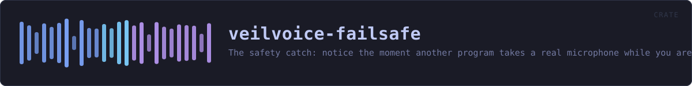

veilvoice-failsafe
The safety catch: notice the moment another program takes a real microphone while you are being veiled, and act -- without ever claiming to have prevented it.
reference · the same page on GitHub
Failsafe: nothing leaves this machine in your own voice by accident.
The accident this exists to stop
You set a calling program to VeilVoice's virtual cable, you start live mode, and everything is veiled. Then you plug in a headset. Windows offers the new microphone, the calling program takes it, and from that moment your real voice is going out — with the veiled window still open in front of you, still showing meters moving, still looking exactly as it did a second ago.
Nobody notices that. It is not a mistake somebody makes through carelessness; it is a mistake the operating system makes on their behalf. Failsafe is on by default because the cost of it being off is that the one thing this whole project exists to prevent happens silently.
What it can do, and what it cannot
It watches which applications hold a microphone, and it knows which device VeilVoice is veiling. If another program picks up a real microphone while you are veiling, that is the accident, and Failsafe:
1. says so, loudly, because a silent guard is not a guard; and 2. closes that program, if Posture::CloseIt is set — which it is by default, because a warning you have not read yet does not stop your voice going out.
It cannot stop the operating system handing a microphone to another program in the first place. Doing that needs exclusive-mode capture of every input device, or a driver, and neither is something this project ships — see CANNOT_PREVENT, which is the wording a front end must show. What Failsafe does is notice within a second or so and act. That is a real difference from nothing, and it is a real difference from prevention, and both halves have to be said.
Killing another program is a serious thing
So it is bounded rather than general:
- VeilVoice never closes itself, which would end the veiling it exists to protect.
- It never closes a system process.
PROTECTEDis a list, checked by name, and anything on it is reported and left alone. - It only closes what is actually holding a microphone, from the watch feed, never a name from a guess.
- Every close is recorded, because a program that vanishes with nothing to explain it is indistinguishable from a crash.
In plain words
Failsafe is on by default and it is the safety catch.
The danger it guards against is this: you are talking through VeilVoice with your voice disguised, you plug in headphones or a headset, and your computer quietly switches the call over to the real microphone. Your actual voice goes out and nothing on screen looks any different.
Failsafe watches for exactly that. If another program picks up a real microphone while you are being veiled, it tells you straight away and closes that program so your voice stops going out.
What it cannot do is stop your computer from handing the microphone over in the first place — that needs a level of access this program does not have, and it says so rather than letting you believe otherwise. It notices, and it acts, within about a second.
HOW THE CRATE FITS TOGETHER
Every arrow is a crate:: or super:: path one module actually uses, read out of the source rather than drawn by hand.
The same graph as Mermaid source
%%{init: {"theme":"base","themeVariables":{"background":"#1a1b26","primaryColor":"#1f2335","primaryTextColor":"#c0caf5","primaryBorderColor":"#7aa2f7","secondaryColor":"#16161e","tertiaryColor":"#16161e","lineColor":"#737aa2","textColor":"#c0caf5","mainBkg":"#1f2335","nodeBorder":"#7aa2f7","clusterBkg":"#16161e","clusterBorder":"#2f3549","fontFamily":"ui-monospace, SFMono-Regular, Consolas, monospace","fontSize":"14px"}}}%%
flowchart TD
n_lib(["lib.rs<br/>682 lines"])
n_act["act.rs<br/>171 lines"]
click n_lib href "https://github.com/tilas01/veilvoice/blob/main/crates/veilvoice-failsafe/src/lib.rs" "open the source"
click n_act href "https://github.com/tilas01/veilvoice/blob/main/crates/veilvoice-failsafe/src/act.rs" "open the source"This site loads no third-party script, so it cannot run Mermaid; the diagram above is the same nodes and edges drawn by the generator instead. GitHub renders the source below directly.
THE FILES
| File | Lines | What it is |
|---|---|---|
act.rs | 171 | Actually closing a program, kept apart from deciding to. |
lib.rs | 682 | Failsafe: nothing leaves this machine in your own voice by accident. |